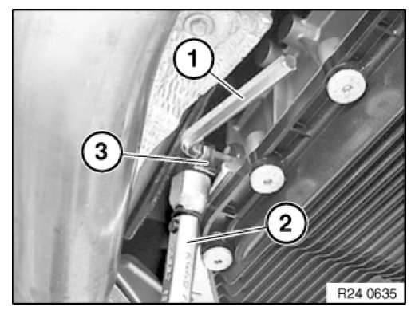
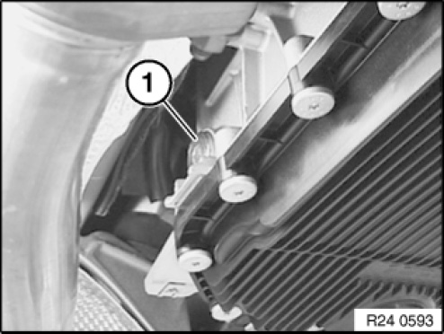
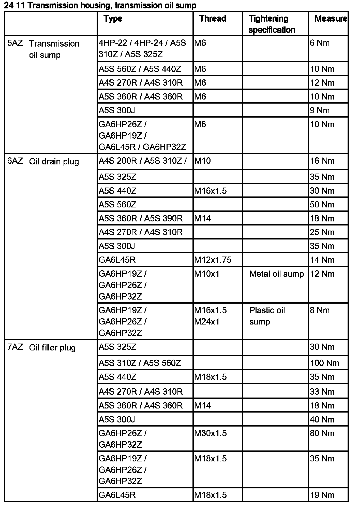
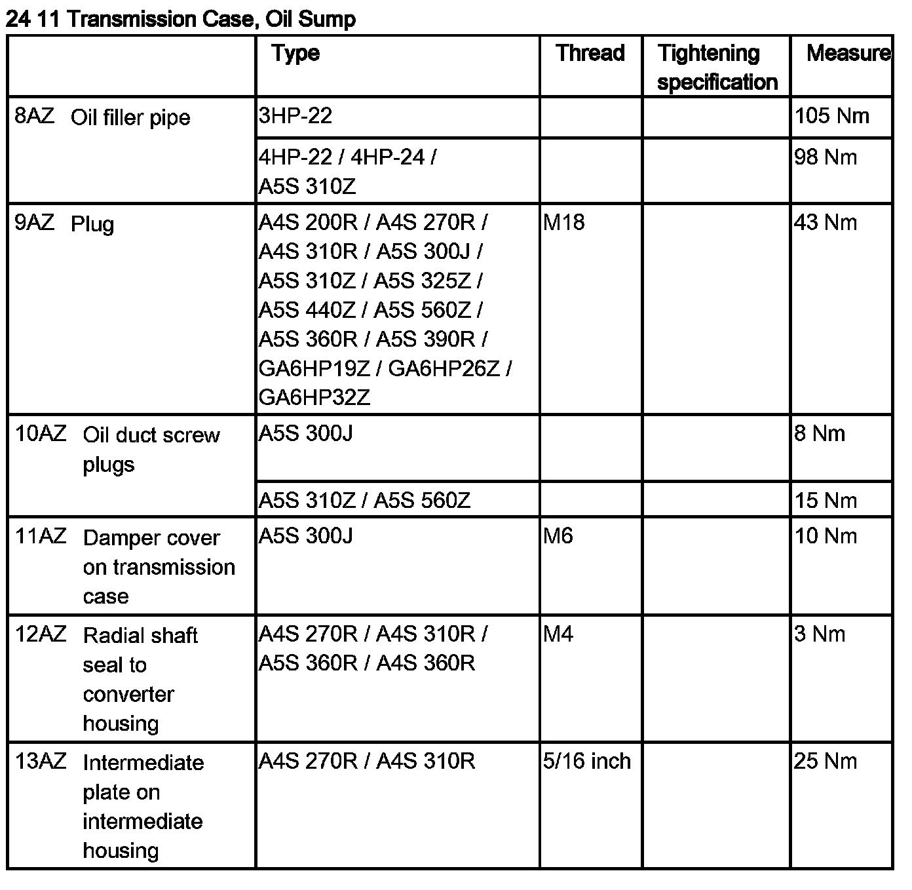
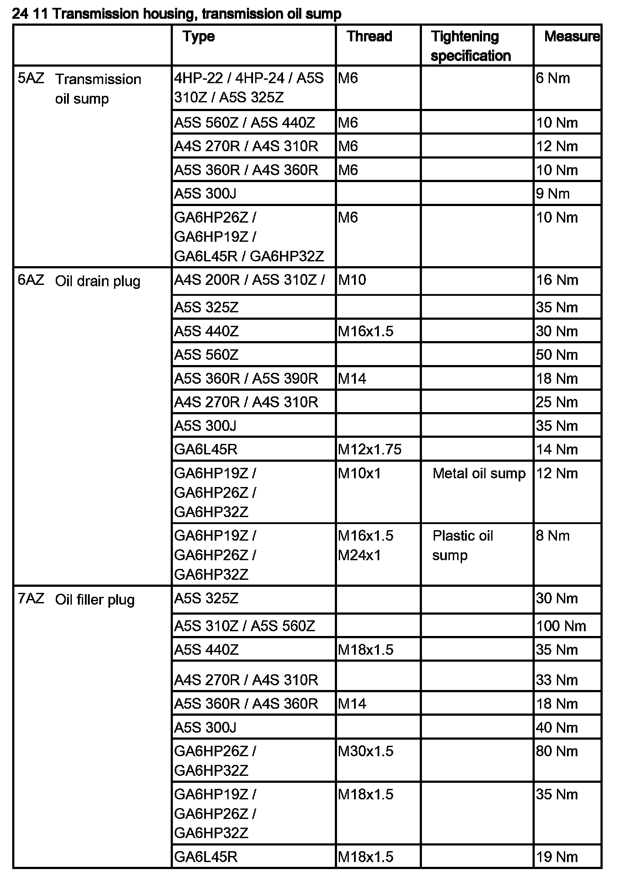
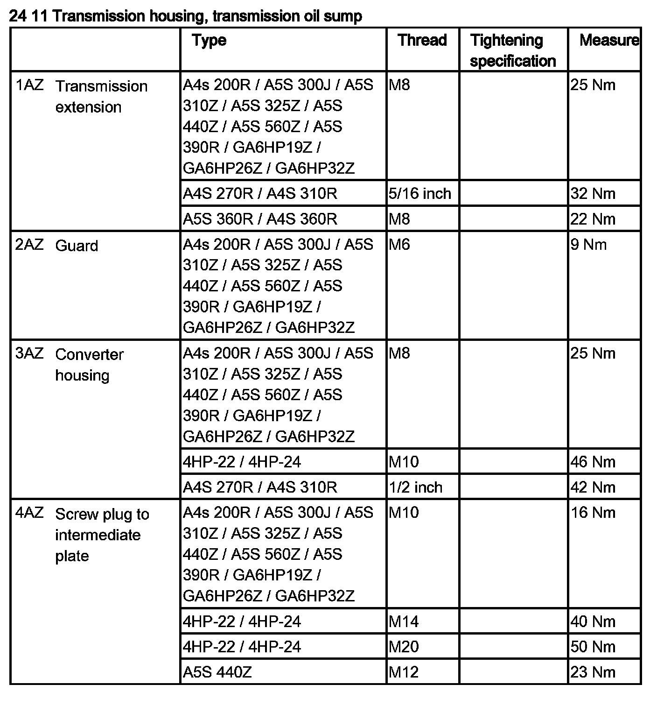
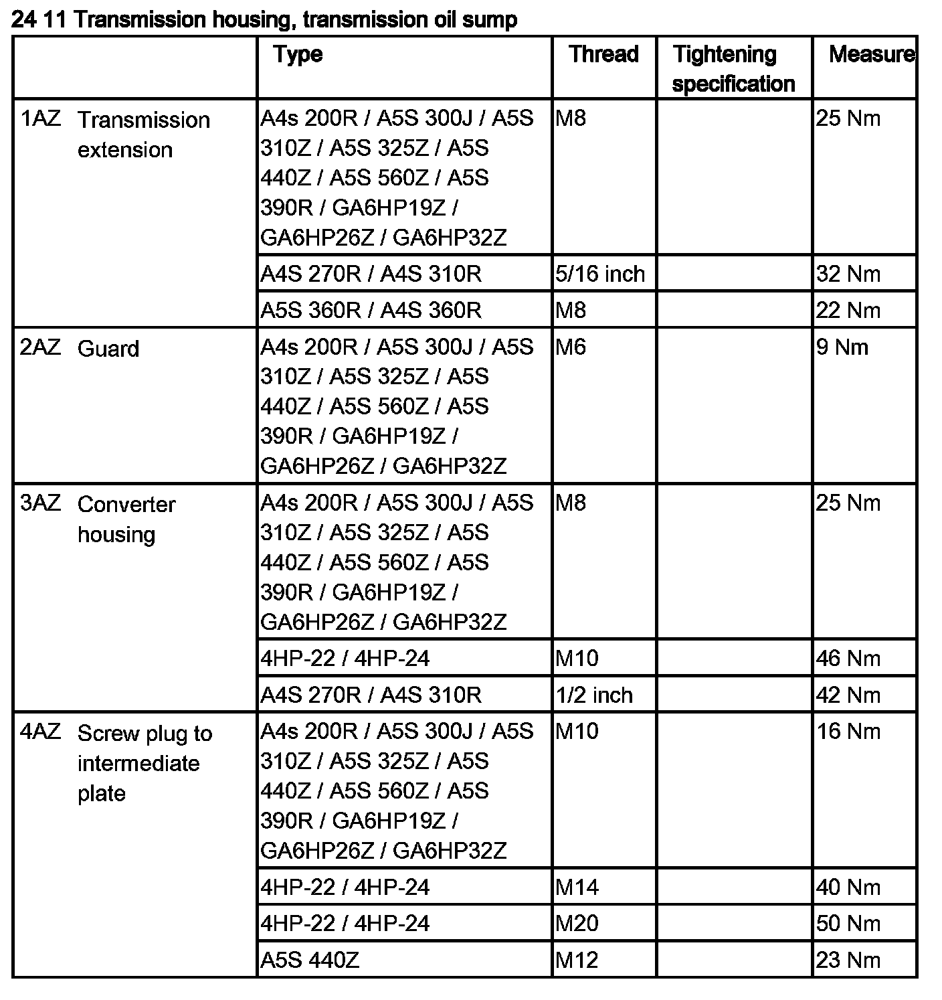
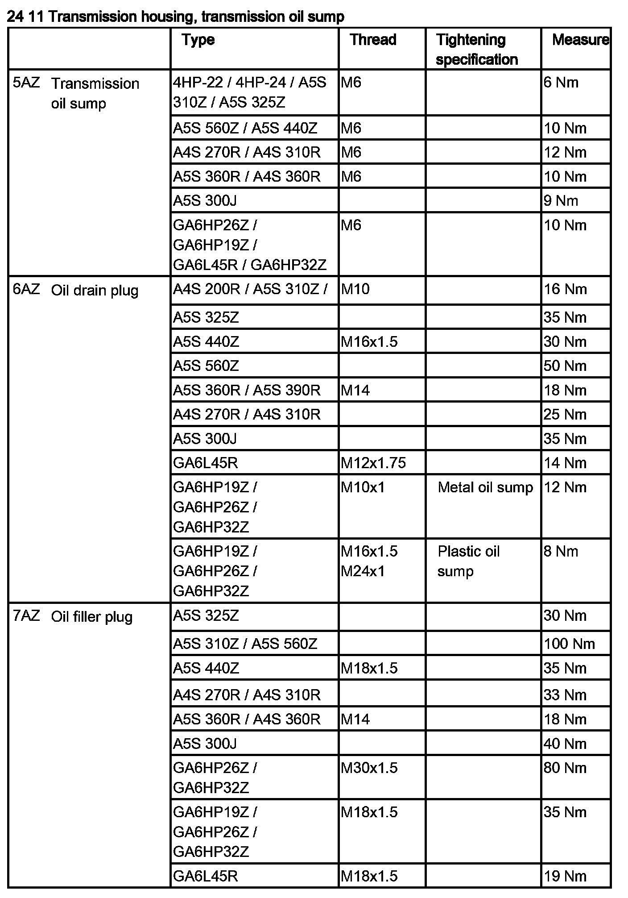
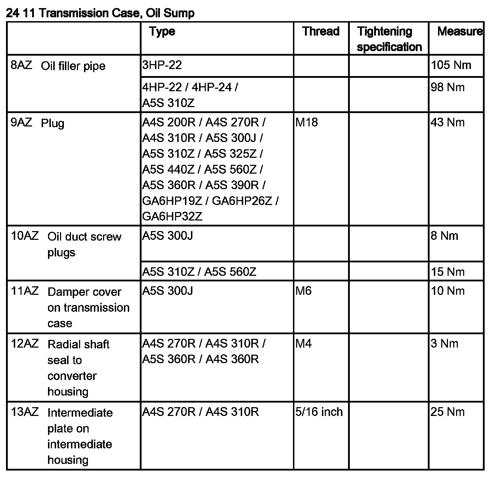

<!DOCTYPE html>
<html>
  <head>
    <title>00 11 237 Checking/Topping Up Fluid Level In Automatic Transmission (GA6HP19Z) — 2011 BMW 128i Coupe (E82) L6-3.0L (N52K) Service Manual | Operation CHARM</title>
    <meta name='description' content="Detailed repair manual for the 2011 BMW 128i Coupe (E82) L6-3.0L (N52K).">
    <link rel='stylesheet' href="../style.css">
    <meta name='viewport' content='width=device-width, initial-scale=1.0' />
  </head>
  <body>
    <div class='theme-colors header'>
      <div class='branding'><b>Operation CHARM</b>: Car repair manuals for everyone.</div>
<div class=breadcrumbs><a class='breadcrumb-part' href="../">Home</a> <b>&gt;&gt;</b> <a class='breadcrumb-part' href="../BMW/">BMW</a> <b>&gt;&gt;</b> <a class='breadcrumb-part' href="../BMW/2011/">2011</a> <b>&gt;&gt;</b> <a class='breadcrumb-part' href="../index.html">128i Coupe (E82) L6-3.0L (N52K)</a> <b>&gt;&gt;</b> <a class='breadcrumb-part' href="0.html">Repair and Diagnosis</a> <b>&gt;&gt;</b> <a class='breadcrumb-part' href="0.html#Maintenance/">Maintenance</a> <b>&gt;&gt;</b> <a class='breadcrumb-part' href="0.html#Maintenance/Fluids/">Fluids</a> <b>&gt;&gt;</b> <a class='breadcrumb-part' href="136.html">Fluid - A/T</a> <b>&gt;&gt;</b> <a class='breadcrumb-part' href="136.html#Service%20and%20Repair/">Service and Repair</a> <b>&gt;&gt;</b> <a class='breadcrumb-part' href="8990.html">00 11 237 Checking/Topping Up Fluid Level In Automatic Transmission (GA6HP19Z)</a></div></div>
<div class="theme-colors floaty-message lemon-message">
  <b style="font-size: 1.5em; color: gold">Manuals through 2025 now available!</b>
  <br><br>
  Our trusted friends have launched a new website named LEMON, which has newer manuals. It also contains all the CHARM manuals.
  <br><br>
  LEMON is the spiritual successor to  CHARM, I recommend you try it!
  <br><br>
  Link: <a style='white-space: nowrap' href="../missing-page">lemon-manuals.la</a> or <a style='white-space: nowrap' href="../missing-page">lemon-manuals.org.ua</a>
  <br><br>
  (Some people have issue connecting. LEMON is investigating. For now, use Firefox or change your DNS server)
  <br><br>
  Or, hide this message: <a href="../missing-page">temporarily</a> or <a href="../missing-page">permanently</a>
</div>
<div class='main'>
<h1>00 11 237 Checking/Topping Up Fluid Level In Automatic Transmission (GA6HP19Z)</h1><br><br><b>00 11 237 Checking/topping up fluid level in automatic transmission (GA6HP19Z)</b><br><br><br><div class='oxe-image'></div><br><br><br><br><br><b>IMPORTANT:</b><br>Use only the approved transmission fluid.<br>Failure to comply with this requirement will result in serious damage to the automatic transmission.<br><br><br><div class='oxe-image'></div><br><br><br><br><br>Installation:<br>Tighten down filler plug using<br><span class='indent-2'>&#09;</span>1.<span class='indent-5'>&#09;</span>Hexagon wrench 8 A/F<br><span class='indent-2'>&#09;</span>2.<span class='indent-5'>&#09;</span>torque wrench<br><span class='indent-2'>&#09;</span>3.<span class='indent-5'>&#09;</span>Socket 8 A/F<br><br><br><div class='oxe-image'></div><br><br><br><br><br><b>Topping up transmission fluid after a repair:</b><br>Stand vehicle on a level surface and secure against rolling off.<br>Undo filler plug (1).<br><br>Installation:<br>Replace sealing ring.<br><br>Top up transmission fluid until it emerges from filling orifice.<br>Start engine.<br>Replenish transmission fluid until it emerges from filling orifice.<br>Screw in filler plug (1).<br>Tightening torque: 24 11 7AZ.<br>Press brake pedal to floor and shift through gears 1 to 6 several times at idle speed.<br>Then shift to "P" position (Park).<br>Then check fluid level.<br><br><br><div class='oxe-image'></div><br><br><br><br><br><b>Checking fluid level:</b><br><span class='indent-2'>&#09;</span>-<span class='indent-5'>&#09;</span>Connect BMW Diagnosis and Information System (DIS) or BMW MoDiC to vehicle.<br><span class='indent-2'>&#09;</span>-<span class='indent-5'>&#09;</span>Call up Service functions (drive).<br><span class='indent-2'>&#09;</span>-<span class='indent-5'>&#09;</span>Carry out fluid level check in accordance with instructions.<br><br><br><div class='oxe-image'></div><br><br><br><br><br><div class='oxe-image'></div><br><br><br><br><br><div class='oxe-image'></div><br><br><br><h3>I��:</h3><div class='oxe-image'></div><br><br><br><div class='oxe-image'></div><br><br><br><br><br><div class='oxe-image'></div><br><br><br><div class='oxe-image'></div><br><br><br><div class='oxe-image'></div><br><br><br><br><br><div class='oxe-image'></div><br><br><br></div>
<div class="theme-colors footer">
  <i>pro multis</i> · <a href="../about.html">About Operation CHARM</a>
</div>
<script src="../script.js"></script>
</body>
</html>
